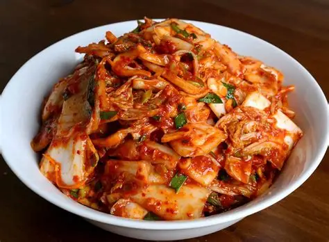
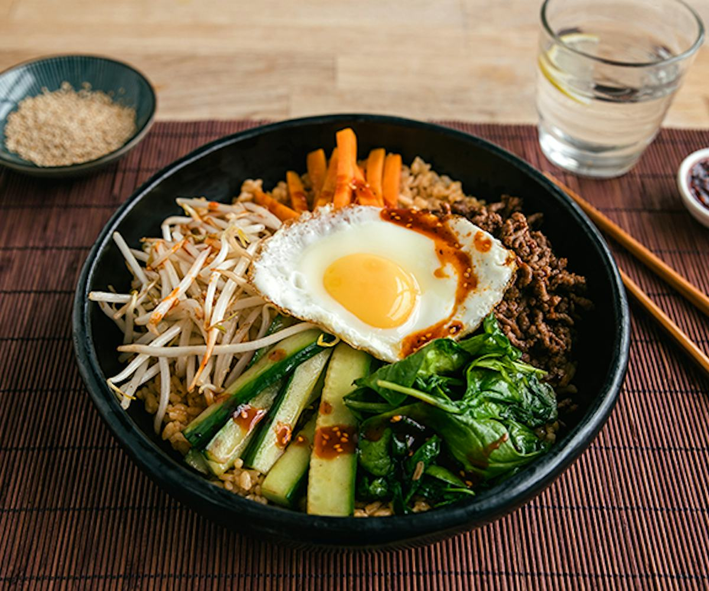

South Korea – Foods

Kimchi
Spicy fermented cabbage, a traditional staple in Korean cuisine.

Bibimbap
A mixed rice dish with vegetables, meat, egg, and spicy gochujang sauce.

Tteokbokki
Chewy rice cakes in a sweet and spicy chili sauce, popular street food.